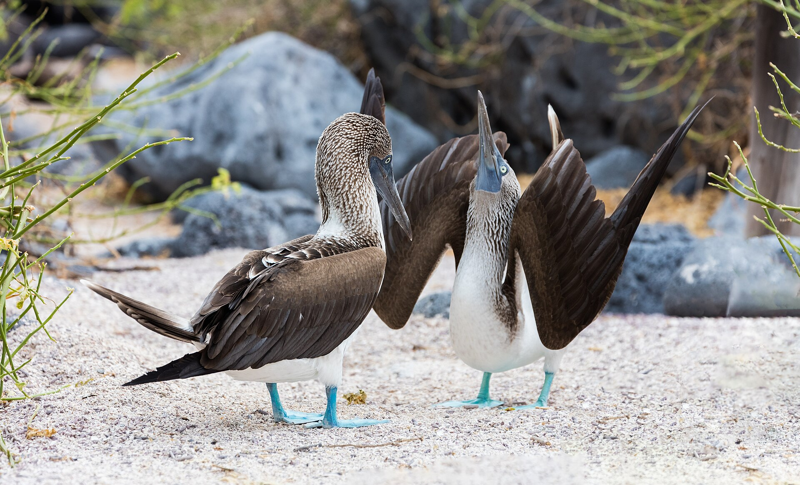
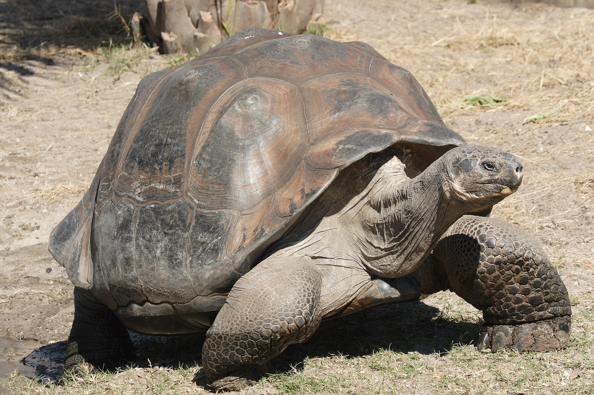
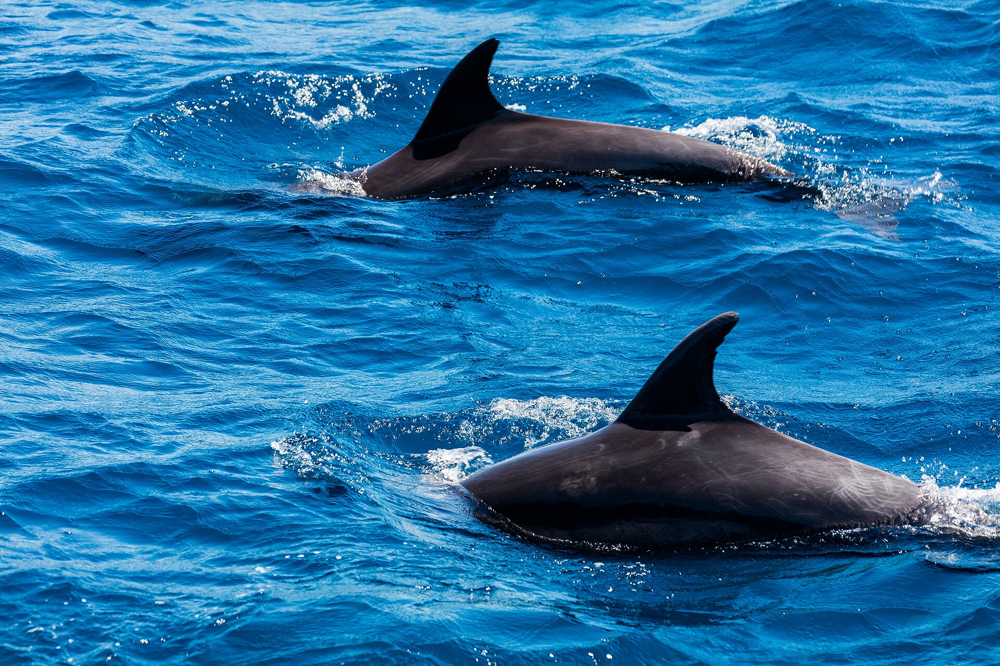
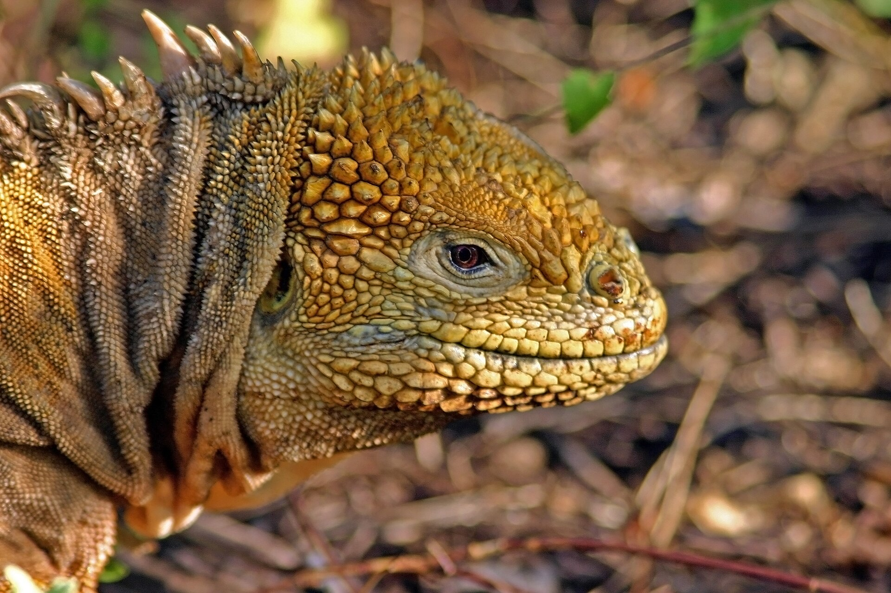

Sin peluches inventados
No usamos imágenes creadas con IA como si fueran productos reales.

Galápagos · Cuenca · Proyecto en construcción
Una idea de peluches, camisetas y bolsos inspirada en los animales de Galápagos, contada con fotografías, videos y leyendas reales.
Fotografía documental real. No representa un producto.
01 / La idea
MARINA ISLAND es un nombre provisional. La página puede conservarse y actualizarse cuando la familia defina la marca, registre el nombre y tenga las fotografías reales de sus productos.
No usamos imágenes creadas con IA como si fueran productos reales.
La estructura queda lista para cambiar nombre, fotos, textos y productos.
Las fotos, los videos y las leyendas finales se publican cuando ustedes los aprueben.
02 / Colección
Estos espacios muestran cómo quedará la tienda. Ninguna imagen documental se presenta como mercancía.
Piqueros, tortugas, delfines, iguanas y los animalitos que formen parte de la colección real.
Diseños, tallas y colores se incorporarán cuando existan fotografías aprobadas.
Un espacio preparado para mostrar cada modelo real y consultar por WhatsApp.
03 / Historias de la isla
Fotografías documentales de las especies que inspiran la idea. No corresponden a los peluches.
Soy el piquero de patas azules. Me alimento de peces y me sumerjo en el océano para encontrarlos. Cuida el mar, respeta mi espacio y ayuda a proteger la vida de Galápagos.

Soy una tortuga gigante de Galápagos. Me alimento principalmente de plantas y necesito un hábitat sano para vivir. No dejes basura y ayuda a cuidar los lugares que compartimos.

Soy un delfín y vivo en el mar junto a otros de mi especie. Necesito aguas libres de plástico y contaminación. Cuida el océano y observa la fauna sin perseguirla ni alimentarla.

Soy la iguana terrestre de Galápagos. Me alimento de cactus, frutos y otras plantas. Vivo entre tierra volcánica y vegetación. Respeta mi hogar y mírame siempre desde una distancia segura.
04 / Videos reales
Cada espacio admite un video propio o un enlace de Instagram, TikTok o YouTube.
No se publicarán videos creados con IA para hacerlos pasar por productos reales.
05 / Próximo paso
Una imagen clara de cada producto y el video de cada animalito.
Revisan juntos cada historia y deciden qué texto representa mejor la idea.
MARINA ISLAND puede cambiarse cuando estén seguros de la marca.
El catálogo queda listo con sus productos reales y contacto directo.
06 / Contacto
Envíen las fotografías, los videos y las leyendas por WhatsApp. Esta estructura se conserva mientras deciden juntos el nombre y la colección final.
Enviar material por WhatsApp ↗